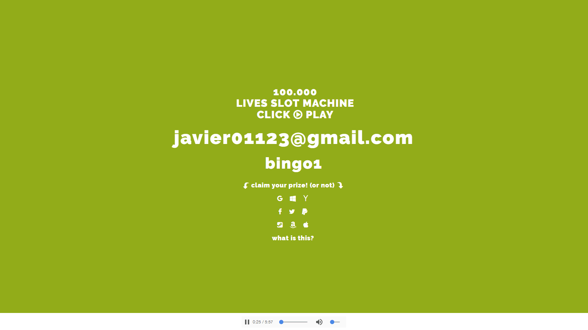

100K Lives Slot Machine
— An experimental interpretation of leaked email and passwords
> Abstract
This project is an experimental interpretation of one hundred thousand stolen & leaked emails and passwords, leaked between October 22nd to 31st of 2016, represented through images, sounds and an interactive gambling game. The whole experiment is based around on how data can be transformed, read and displayed.
> Made With
Photoshop, HTML, CSS, JavaScript, Jquery, Audacity.
> Keywords
Data, leaked information, hexadecimal, gambling.
> Links
Github
> Concept
Having access to strangers accounts can seem quite impossible, but in reality, it isn’t. Hourly, hundreds of thousands of emails accounts are stolen and leaked, and the user is, most of the times, not aware of this situation, since emails and passwords are just text and can be leaked pretty easily.
This information is easily accessible by just a quick google search. Hundreds of sites provide a space for anyone to upload a text file with thousands of accounts and passwords, that being only a fraction of what they truly possess, announcing and giving the information if you have interest in buying the rest of information.
The danger in this kinds of leaks, is not just having your personal information and email leaked, the real problem is that most people use the same email, passwords and usernames for various different accounts. With that in mind, if we have access to an email, it is most likely that we might have access to that person's facebook, twitter, or even amazon or paypal accounts if they do not have two-factor authentication or other security features.
In this project it was acquired more than one hundred thousand leaked and stolen accounts to set a database. There was a mapping made through all the possible characters, excluding space, inside all the passwords, based on the american layout keyboard to see the ones that are most used. It was also mapped out the providers that had most vulnerable email accounts. Interesting, while acquiring all that information, which surprisingly took only about an hour and a half, it came the realization: one hundred thousands accounts, lives, possible different persons, are resumed in about 3.37 megabytes of text. If all seven billion people in the world had one email account at least, it would basically be resumed in about 236 megabytes of text, which is surprisingly light.
34 files from different "ads" for leaked databases on pastebin.com.
> Visual Interpretation
Each image was made created in a 16 Bit base as a Bitmap Image, each image having exactly 430.944 characters in order to work properly, and assembled in a hexadecimal editor. All the data resulted in four images, 268 x 268 pixels, only leaving a few accounts out, each containing at least, approximately, 25.000 accounts or passwords.

One Hundred Thousand emails compressed in 1072x268 pixels, 616kB after .bmp to .jpg conversion.
One Hundred Thousand passwords compressed in 1072x268 pixels, 565kB after .bmp to .jpg conversion.

All emails in four images of 268x268 pixels, 210kB per image, in a .gif.

All passwords in four images of 268x268 pixels, 210kB per image, in a .gif.
> Auditive Interpretation
The sound was created through Audacity’s ability to interpret any file as pure raw data, where it converts the chosen files into sound, dependending heavily on it’s configuration of channels and hertz configuration. Interestingly, the resulting audio of all emails generated only 1 minute and 30 seconds of sound, when the sound of the passwords is 5 minutes and 57 seconds long. The primary suspicion is that the emails had way too many similar attributes, like domains, providers and ”@”, resulting a eeary, noisy, and aggressive sound.
Emails > Text > Hexadecimal > BMP File > WAV File.
Passwords > Text > Hexadecimal > BMP File > WAV File.
> Interactive Interpretation
The idea of the slot machine was to recreate that ambient of a busy cassino, full of people gambling away their wealth or just spending a few bucks for fun, only with the given data and tools available. When the user comes into this webpage, a lot of things are already happening, the colors are changing, there is this busy background noise, and there is something calling my attention, forcing me to do something, which is to play in the 100.000 lives slot machine. After the flashing colors and slot-like metallic sounds, you receive an email, and a password, randomly selected just for you to try and test it out in emails and other websites if the password is right, existing a probability of 1 in a billion attempts to get the right password to right email, creating the same sensation to gambling, generating the thought “but what if win?”.

100k lives slot machine. 1 in a billion chances to match the email with the right password.